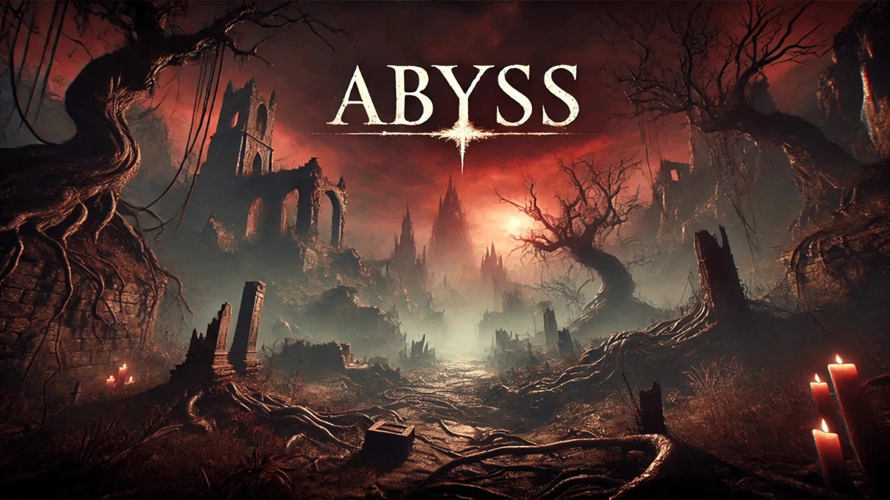
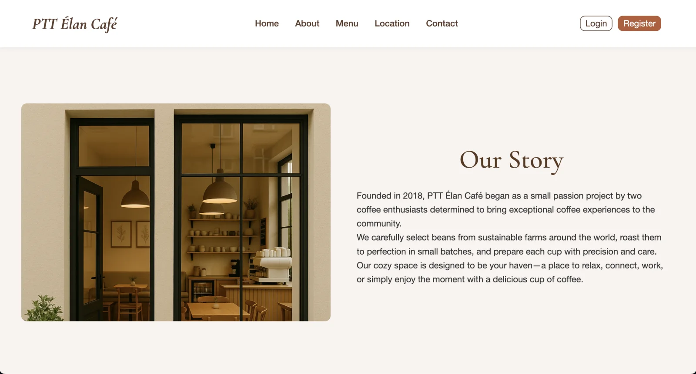

Tarot Web App
ออกแบบ interaction ของสำรับไพ่ด้วย HTML5 Canvas และ CSS animation รองรับการสุ่มไพ่หลายรูปแบบ ไพ่กลับหัว และการใช้งานบนหน้าจอทุกขนาด
Personal projects · Web, game & utility
ผลงานนอกเวทีแข่งขัน ตั้งแต่เว็บแอปที่เปิดให้ใช้งานจริง เกมที่พัฒนาด้วย Pygame เว็บไซต์ร้านกาแฟ และเครื่องมือแก้ปัญหาเล็ก ๆ ในชีวิตประจำวัน
Live product
เว็บดูดวงไพ่ทาโรต์ภาษาไทยที่มีไพ่ครบ 78 ใบ ระบบไพ่กลับหัว Responsive Card Fan และสารานุกรมความหมายไพ่
ออกแบบ interaction ของสำรับไพ่ด้วย HTML5 Canvas และ CSS animation รองรับการสุ่มไพ่หลายรูปแบบ ไพ่กลับหัว และการใช้งานบนหน้าจอทุกขนาด
More builds

เกม Action RPG มุมมอง top-down พัฒนาด้วย Python และ Pygame ในทีม 3 คน ผมรับผิดชอบการออกแบบด่าน ตัวละคร เมนู Tutorial และช่วยดูแล GitHub ของทีม
View on GitHub ↗
เว็บไซต์ร้านกาแฟที่พัฒนาเป็นทีม มีระบบ Login/Register เมนูกาแฟแบบกรองหมวดหมู่ ภาพสไลด์ แผนที่ และแบบฟอร์มรับข่าวสาร
View on GitHub ↗$ python keyboardTrans.py
input › l;ylfu8iy[
output › สวัสดีครับ
Copied to clipboard ✓เครื่องมือออฟไลน์สำหรับแปลงข้อความที่พิมพ์ด้วย Keyboard Layout ผิดภาษา รองรับไทย↔อังกฤษ ข้อความผสม และคัดลอกผลลัพธ์ไปยัง Clipboard โดยอัตโนมัติ
View on GitHub ↗